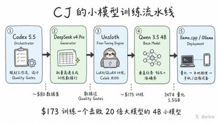
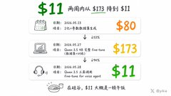
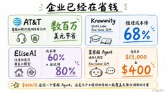

X / AI
Small Model
Fine-tuning
中密度发布
训练小模型：2026 年最被低估的 AI 技能
这条帖的核心不是“又一个 fine-tune 教程”，而是：小模型训练正在从大公司研发项目，变成个人开发者可承受的实战技能。
原帖互动2538 👍 / 316 ↻
浏览量178K views
成本轨迹$80 → $173 → $11
部署路径llama.cpp / Ollama
01 / 核心判断
判断
一句话结论
这条帖最重要的判断是：真正的护城河不是 fine-tune 本身，而是数据工厂。 当训练、评估、部署被串成流水线后，个人开发者也能把小模型做成可用产品。
这条帖在讲什么
- 先讲方法论：Codex 负责编排，DeepSeek 负责生成，Unsloth 负责训练，Qwen 3.5 4B 负责承载。
- 再讲结果：用约 $173 训练出一个 4B 模型，在垂直任务上能打到 96%+。
- 最后讲趋势：小模型训练已经从“公司预算”变成“午饭钱”级别。
怎么读这张卡
把它当成一张“AI 成本结构变化卡”：不是在夸某个模型更大，而是在说明——当数据生成和微调流程被工程化，小模型就会变成最便宜的实战解法。
主线
小模型训练 = 数据工厂 + 微调 + 轻量部署。
关键词
数据、成本、评估、量化、端侧部署。
边界
它不是“通用大模型替代品”，而是“垂直任务的低成本解法”。
02 / 原帖三张图
图像



03 / 方法论拆解
流程
训练链路
- Orchestrator：Codex 5.5 负责规划与调度。
- Generator：DeepSeek v4 Pro 负责批量生成训练样本。
- Engine：Unsloth 负责低成本高效微调。
- Base Model：Qwen 3.5 4B 作为垂直任务基座。
- Deployment：llama.cpp / Ollama 做轻量部署。
为什么这套链路有价值
因为它把最难的部分从“会不会训练”移动到“能不能持续生产高质量数据”。一旦数据流水线稳定，模型训练就不再是一次性项目，而是可重复、可迭代的工程动作。
04 / 为什么现在会变便宜
趋势
核心变化：从“模型越大越强”转向“垂直任务上，数据质量和流程质量更重要”。
这条帖把成本压到个人可承受范围，等于告诉你：小模型训练已经从少数人的技能，变成可以入门的工程实践。
市场信号
SLM 市场和企业案例都在验证“更小、更专”的路线。
能力信号
训练、量化、本地推理已经变成一条完整链路。
结果信号
成本从百美元、几十美元一路压到 $11。
05 / 值得记住的话
结论
不是每个人都需要学会训练模型，但学会训练小模型的人，不再需要 10 人团队和 10 万美元预算。
source / yibie · X status- 原帖链接：https://x.com/i/status/2061377756659593577
- 作者：@yibie